This document contains the solutions for DSP Homework 4. For each problem, the analytical derivation is followed by the corresponding MATLAB and Julia implementation when applicable.
Let $x[n]$ be a length-N sequence with $X[k]$ denoting its N-point DFT. We represent the DFT operation as $X[k]=F\{x[n]\}$. Determine the sequence $y[n]$ obtained by applying the DFT operation 4 times to $x[n]$, i.e., $y[n] = F\{F\{F\{F\{x[n]\}\}\}\}$.
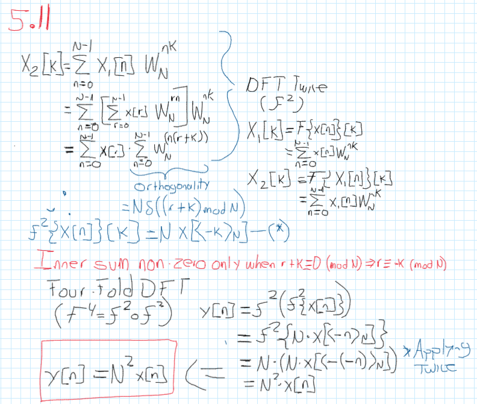
Consider a length-$N$ sequence $x[n]$, $0 \le n \le N-1$, with $N$ even. Define two length-$\frac{N}{2}$ sequences given by
\[ g[n] = \left(x[n] + x\left[n+\frac{N}{2}\right]\right), \qquad h[n] = \left(x[n] - x\left[n+\frac{N}{2}\right]\right) W_N^n, \qquad 0 \le n \le \frac{N}{2}-1. \]
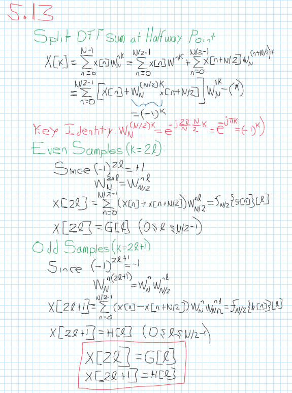
Let $Y[k]$ denote the $MN$-point DFT of a length-$N$ sequence $x[n]$ appended with $(M-1)N$ zeros. Show that the $N$-point DFT $X[k]$ can be simply obtained from $Y[k]$ as follows:
\[ X[k] = Y[kM], \qquad 0 \le k \le N-1. \]
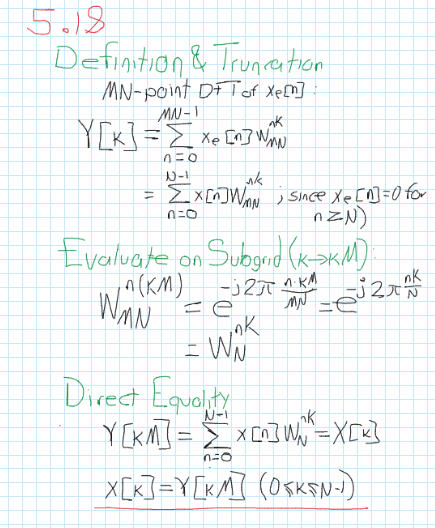
(a) Consider a length-$N$ sequence $x[n]$, $0 \le n \le N-1$, with an $N$-point DFT $X[k]$, $0 \le k \le N-1$. Define a sequence $y[n]$ of length $LN$, $0 \le n \le LN-1$, given by
\[ y[n] = \begin{cases} x[n/L], & n = 0, L, 2L, \ldots, (N-1)L, \\ 0, & \text{otherwise}, \end{cases} \tag{5.202} \]
where $L$ is a positive integer. Express the $NL$-point DFT $Y[k]$ of $y[n]$ in terms of $X[k]$.
(b) The 5-point DFT $X[k]$ of a length-5 sequence $x[n]$ is shown in Figure P5.1. Sketch the 20-point DFT $Y[k]$ of a length-20 sequence $y[n]$ generated using Eq. (5.202).
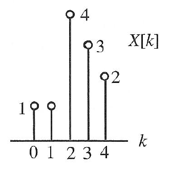
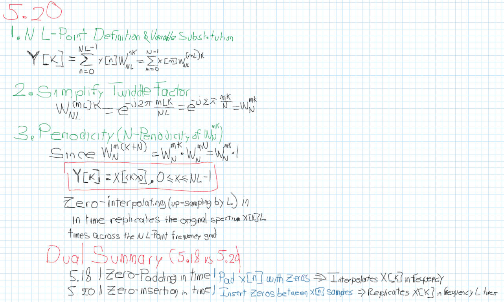
Figure P5.1
Consider a rational discrete-time Fourier transform $X(e^{j\omega})$ with real coefficients of the form
\[ X(e^{j\omega}) = \frac{P(e^{j\omega})}{D(e^{j\omega})} = \frac{p_0 + p_1 e^{-j\omega} + \cdots + p_{M-1} e^{-j\omega(M-1)}}{d_0 + d_1 e^{-j\omega} + \cdots + d_{N-1} e^{-j\omega(N-1)}}. \]
Let $P[k]$ denote the $M$-point DFT of the numerator coefficients $\{p_i\}$ and $D[k]$ denote the $N$-point DFT of the denominator coefficients $\{d_i\}$. Determine the exact expressions of the DFT $X(e^{j\omega})$ for $M = N = 4$ if the 4-point DFTs of its numerator and denominator coefficients are given by
\[ P[k] = \{3.5,\ -0.5 - j9.5,\ 2.5,\ -0.5 + j9.5\}, \qquad D[k] = \{17,\ 7.4 + j12,\ 17.8,\ 7.4 - j12\}. \]
Verify your result using MATLAB.
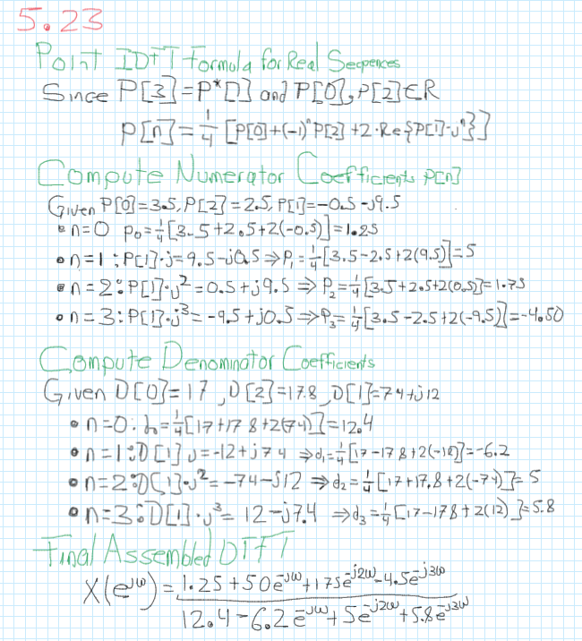
Consider two length-$N$ real-valued sequences $x[n]$ and $y[n]$ defined for $0 \le n \le N-1$ with $N$-point DFTs $X[k]$ and $Y[k]$, $0 \le k \le N-1$, respectively. The circular cross-correlation of $x[n]$ and $y[n]$ is given by
\[ r_{xy}[\ell] = \sum_{n=0}^{N-1} x[n]\, y[(n-\ell)_N], \qquad 0 \le \ell \le N-1. \tag{5.203} \]
Express the DFT of $r_{xy}[\ell]$ in terms of $X[k]$ and $Y[k]$.
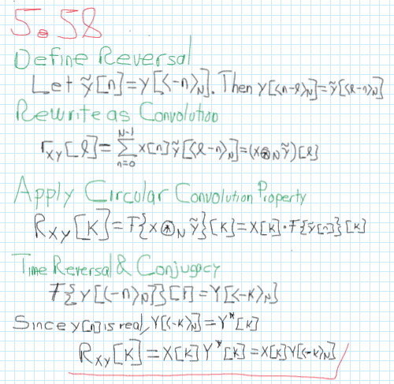
The first seven samples of the 12-point DFT $H[k]$, $0 \le k \le 11$, of a length-12 real sequence $h[n]$, $0 \le n \le 11$, are given by
\[ H[k] = \{4.0,\ 17.19 + j1.46,\ -9.0 + j3.46,\ -9.0 + j5.0,\ 1.0 + 24.25j,\ 6.8 - j5.46,\ 6.0\}. \]
Determine the 12-point DFT $G[k]$ of the length-12 sequence $g[n] = h[(n-17)_{12}]$ without computing $h[n]$, forming the sequence $g[n]$, and then taking its DFT.
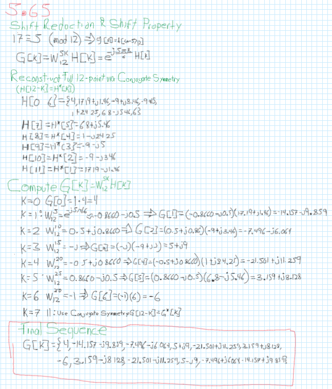
Write a MATLAB program to compute the circular convolution of two length-$N$ sequences via the DFT-based approach. Using this program, determine the circular convolution of the following pairs of sequences:
(a) $g[n] = \{3,\ 2,\ -2,\ 1,\ 0,\ 1\}$, $h[n] = \{-5,\ -1,\ 3,\ -2,\ 4,\ 4\}$
(b) $x[n] = \{3-j2,\ 4-j,\ -2+j3,\ j,\ 0\}$, $v[n] = \{1-j3,\ -2-j,\ 2+j2,\ 3,\ -2+j4\}$
(c) $x[n] = \cos(\pi n/2)$, $y[n] = 3^n$, $0 \le n \le 4$
Verify your result using the function circonv.
Method. By the $N$-point circular convolution theorem of Table 5.3, $g[n] \otimes_N h[n] \longleftrightarrow G[k]H[k]$, so
\[ y[n] = \mathrm{IDFT}\big\{\,\mathrm{DFT}\{g\}\cdot\mathrm{DFT}\{h\}\,\big\}. \]
circonv evaluates $y[n]=\sum_m x[m]\,h[\langle n-m\rangle_N]$ directly from the definition and serves as the independent check.
function y = circconv_dft(g, h)
%CIRCCONV_DFT N-point circular convolution of two length-N sequences via the DFT.
g = g(:).'; h = h(:).';
if length(g) ~= length(h)
error('circconv_dft:lengthMismatch', 'Sequences must have equal length.');
end
G = fft(g); % N-point DFT of g[n]
H = fft(h); % N-point DFT of h[n]
y = ifft(G .* H); % N-point IDFT of the product
if isreal(g) && isreal(h)
y = real(y); % discard the round-off imaginary part
end
end"N-point circular convolution g[n] (*)_N h[n] computed with the DFT." function circconv_dft(g::AbstractVector, h::AbstractVector) length(g) == length(h) || throw(DimensionMismatch("sequences must have equal length")) y = idft(dft(g) .* dft(h)) return (eltype(g) <: Real && eltype(h) <: Real) ? real.(y) : y end
Results.
| case | $N$ | $y[n]$ | max error vs circonv |
|---|---|---|---|
| (a) | 6 | $\{-18,\ -14,\ 19,\ 1,\ 5,\ 22\}$ | $8.9\times10^{-16}$ |
| (b) | 5 | $\{-15+j18,\ -15-j23,\ 4+j7,\ 29-j3,\ 5+j13\}$ | $9.1\times10^{-15}$ |
| (c) | 5 | $\{-23,\ -69,\ 35,\ 105,\ 73\}$ | $2.8\times10^{-14}$ |
Hand check of case (a) at $n=0$:
\[ y[0]=g[0]h[0]+g[1]h[5]+g[2]h[4]+g[3]h[3]+g[4]h[2]+g[5]h[1] = -15+8-8-2+0-1 = -18 . \]
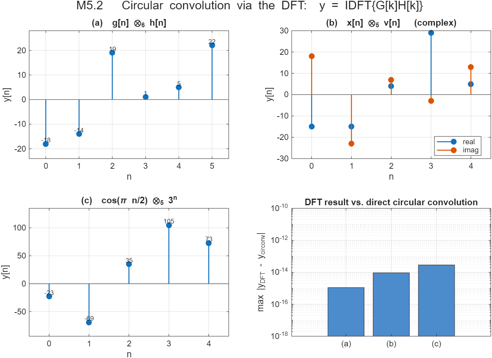
Write a MATLAB program to compute the DFTs of two real sequences of equal lengths based on the method outlined in Section 5.9.1. Using this program, compute the DFTs of the following pairs of sequences:
(a) $\{x[n]\} = \{-3,\ 2,\ 4,\ -6,\ 1,\ 2\}$, $\{h[n]\} = \{2,\ -1,\ 3,\ -4,\ 5,\ 6\}$
(b) $\{x[n]\} = \{5,\ -4,\ -2,\ 6,\ 1,\ 3\}$, $\{h[n]\} = \{4,\ -5,\ 5,\ 1,\ -2,\ 3\}$
Method (Section 5.9.1). Pack the two real sequences into one complex sequence and split the single DFT using the symmetry relations of Table 5.1:
\[ x[n] = g[n] + j\,h[n], \tag{5.116} \]
\[ G[k] = \tfrac12\big(X[k] + X^*[\langle -k\rangle_N]\big), \tag{5.117} \]
\[ H[k] = \tfrac{1}{2j}\big(X[k] - X^*[\langle -k\rangle_N]\big). \tag{5.118} \]
Equation (5.117) extracts the conjugate-symmetric part of $X[k]$ (the transform of the real $g[n]$) and (5.118) the conjugate-antisymmetric part divided by $j$ (the transform of the real $h[n]$). One complex $N$-point FFT replaces two real ones.
function [G, H, X] = dft2real(g, h)
%DFT2REAL N-point DFTs of two real length-N sequences from ONE N-point DFT.
N = length(g);
x = g + 1j*h; % (5.116) pack the two real sequences
X = fft(x); % ONE N-point DFT
k = 0:N-1;
Xrev = conj(X(mod(-k, N) + 1)); % X*[<-k>_N]
G = (X + Xrev) / 2; % (5.117) conjugate-symmetric part
H = (X - Xrev) / (2j); % (5.118) conjugate-antisymmetric part
end"N-point DFTs of two real length-N sequences from a single N-point DFT." function dft2real(g::AbstractVector{<:Real}, h::AbstractVector{<:Real}) N = length(g) x = complex.(float.(g), float.(h)) # (5.116) X = dft(x) # ONE N-point DFT Xr = [conj(X[circidx(-k, N)]) for k in 0:N-1] # conj(X[<-k>_N]) return (X .+ Xr) ./ 2, (X .- Xr) ./ (2im), X # (5.117), (5.118) end
Results, case (a). Packed $x_c[n] = \{-3+j2,\ 2-j,\ 4+j3,\ -6-j4,\ 1+j5,\ 2+j6\}$:
| $k$ | $X_c[k]$ (one DFT) | $X[k]$ = DFT of $x$ | $H[k]$ = DFT of $h$ |
|---|---|---|---|
| 0 | $0 + j11$ | $0$ | $11$ |
| 1 | $-5.2942 + j1.9019$ | $2.5 - j1.5\sqrt3$ | $4.5 + j4.5\sqrt3$ |
| 2 | $-17.8301 - j5.9019$ | $-13.5 + j1.5\sqrt3$ | $-8.5 + j2.5\sqrt3$ |
| 3 | $4 + j9$ | $4$ | $9$ |
| 4 | $-9.1699 - j11.0981$ | $-13.5 - j1.5\sqrt3$ | $-8.5 - j2.5\sqrt3$ |
| 5 | $10.2942 + j7.0981$ | $2.5 + j1.5\sqrt3$ | $4.5 - j4.5\sqrt3$ |
Results, case (b).
\[ X[k] = \{9,\ -1+j5\sqrt3,\ 12+j2\sqrt3,\ -1,\ 12-j2\sqrt3,\ -1-j5\sqrt3\} \]
\[ H[k] = \{6,\ 0.5+j0.5\sqrt3,\ 4.5+j7.5\sqrt3,\ 8,\ 4.5-j7.5\sqrt3,\ 0.5-j0.5\sqrt3\} \]
Both cases match fft(x) and fft(h) to better than $2\times10^{-15}$. The DC and Nyquist samples are free checks: $X[0]=\sum_n x[n]$ and $X[3]=\sum_n(-1)^n x[n]$, giving $0$ and $4$ in case (a), $9$ and $-1$ in case (b).
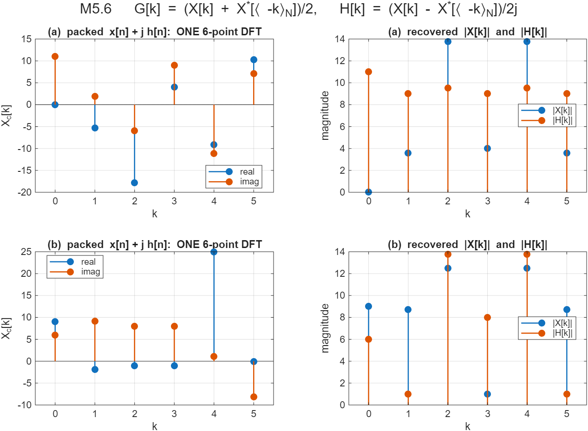
Write a MATLAB program to implement the Fourier-domain filtering illustrated in Example 5.14. Using this program, verify the results of this example.
(The printed statement refers to Example 5.13; per the assignment note it should read Example 5.14.)
The example. The narrow-band lowpass signal
\[ x[n] = 0.1\,n\,e^{-0.03n}, \qquad 0 \le n \le 255, \]
is corrupted by high-frequency random noise. The 256-point DFT is taken, every sample in the band $50 \le k \le 206$ is set to zero, and the 256-point IDFT of the result is the filtered signal.
Why the real part is kept. The zeroed band is conjugate symmetric about $k = 128$, since $206 = 256 - 50$, so $k \in [50,206]$ if and only if $\langle -k\rangle_{256} \in [50,206]$. The filtered DFT stays conjugate symmetric and $y[n]$ is real in exact arithmetic; the computed imaginary part is round-off only, about $10^{-13}$.
The equivalent filter is an ideal zero-phase lowpass with cutoff
\[ \omega_c = \frac{2\pi \cdot 50}{256} = 0.3906\,\pi . \]
N = 256; n = 0:N-1; k1 = 50; k2 = 206;
x = 0.1 * n .* exp(-0.03*n); % original signal
s = x + d; % d = high-frequency noise
S = fft(s); % 256-point DFT
Y = S; Y(k1+1 : k2+1) = 0; % zero the band 50 <= k <= 206
y = real(ifft(Y)); % 256-point IDFT, keep the real partS = dft(s) # 256-point DFT Y = copy(S) Y[k1+1:k2+1] .= 0 # zero the band 50 <= k <= 206 y = real.(idft(Y)) # 256-point IDFT, keep the real part
Results.
| band-limited noise | white noise | |
|---|---|---|
| relative error before filtering | 1.4965 | 1.4989 |
| relative error after filtering | 0.0037 | 0.9801 |
| noise reduction | $404\times$ | $1.5\times$ |
| max imaginary residue | $4.5\times10^{-13}$ | $1.1\times10^{-12}$ |
The first column is the premise of Example 5.14: the noise really is confined to $50 \le k \le 206$, so zeroing that band removes it almost completely and the residual $0.37\%$ error is only the signal's own energy inside the stopband. The second column shows what happens when the noise is not band-limited: only the $157/256 \approx 61\%$ of its energy lying inside the stopband can be removed.
The small ripple at the tail of the filtered response is not leftover noise. An ideal brick-wall filter has an infinitely long impulse response, so sampling its Fourier transform onto 256 DFT points aliases it in time (Section 5.3.4). That is the ripple visible in Figure 5.10(c) of the text.
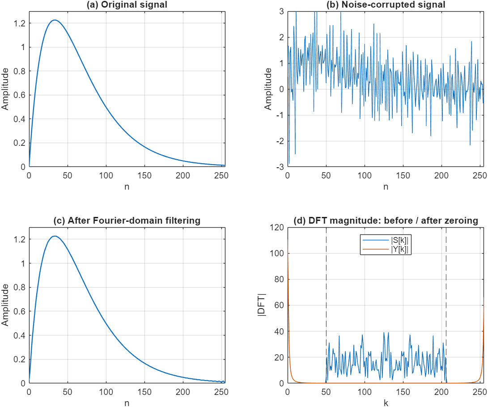